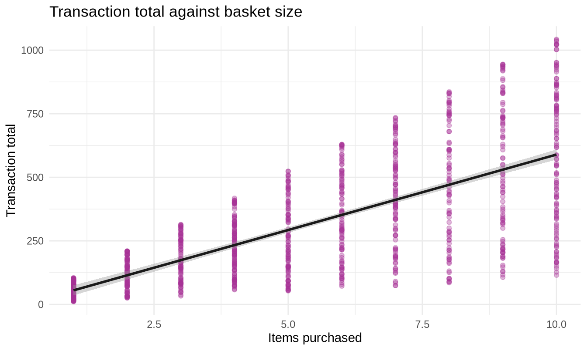
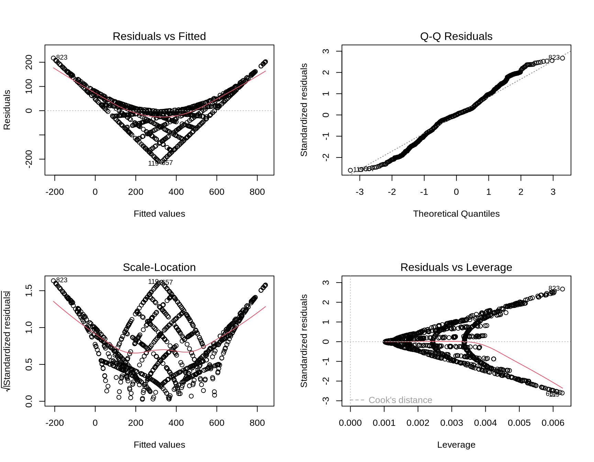
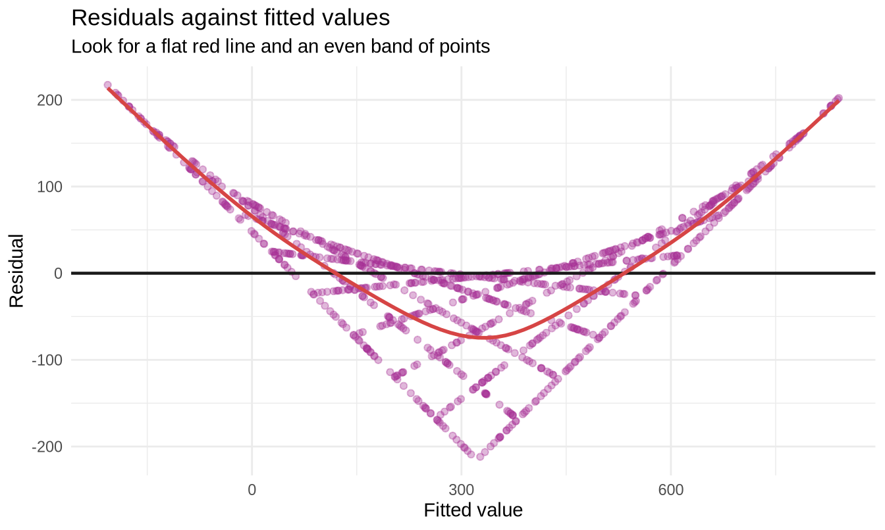

library(tidyverse)
library(readxl)
library(broom)
sales <- read_excel("../data/supermarket_sales.xlsx")3.4 Linear Regression
307102 Descriptive Statistics for Business | University of Petra
New R this week
| Function | What it does | Why a business needs it |
|---|---|---|
lm() |
Fits a linear model | “How much does each extra item add to the bill?” |
summary() |
Coefficients, significance and R-squared | Reading the model |
predict() |
Predicts the outcome for new data | “What would a basket of 7 items cost?” |
augment() |
Adds fitted values and residuals to the data | Diagnostics |
plot(model) |
Four diagnostic plots in one call | Checking the model is trustworthy |
Objectives
By the end of this notebook you will be able to:
- Fit a simple linear regression and interpret its slope and intercept in business terms
- Explain what R-squared measures and what it does not
- Fit a multiple regression and interpret a coefficient while holding others constant
- Check the four assumptions of linear regression using residual plots
- Make predictions with appropriate uncertainty
- Recognise when a regression should not be trusted
Setup
1. From comparing to predicting
Section 3.3 compared groups. Regression does something more ambitious: it describes the relationship between variables, in a form you can use to predict.
The model is a straight line:
\[y = \beta_0 + \beta_1 x + \varepsilon\]
| Symbol | Name | Meaning in business terms |
|---|---|---|
y |
Outcome, dependent variable | The thing you want to explain or predict |
x |
Predictor, independent variable | The thing you think explains it |
beta_0 |
Intercept | Predicted y when x is zero |
beta_1 |
Slope | Change in y for a one-unit increase in x |
epsilon |
Error | Everything the model does not capture |
That last term matters. No model captures everything, and a model that appears to is usually wrong.
2. Simple linear regression
The question: how much does each additional item add to a customer’s bill?
Always plot first.
ggplot(sales, aes(x = Quantity, y = Total)) +
geom_point(colour = "#A83296", alpha = 0.35) +
geom_smooth(method = "lm", colour = "#1A1A1A", se = TRUE) +
labs(title = "Transaction total against basket size",
x = "Items purchased", y = "Transaction total") +
theme_minimal()
model1 <- lm(Total ~ Quantity, data = sales)
summary(model1)#>
#> Call:
#> lm(formula = Total ~ Quantity, data = sales)
#>
#> Residuals:
#> Min 1Q Median 3Q Max
#> -474.32 -99.41 -0.41 100.74 453.25
#>
#> Coefficients:
#> Estimate Std. Error t value Pr(>|t|)
#> (Intercept) -3.993 11.768 -0.339 0.734
#> Quantity 59.339 1.887 31.449 <2e-16 ***
#> ---
#> Signif. codes: 0 '***' 0.001 '**' 0.01 '*' 0.05 '.' 0.1 ' ' 1
#>
#> Residual standard error: 174.3 on 998 degrees of freedom
#> Multiple R-squared: 0.4977, Adjusted R-squared: 0.4972
#> F-statistic: 989 on 1 and 998 DF, p-value: < 2.2e-16Reading the output
The coefficients table is the heart of it.
tidy(model1)#> # A tibble: 2 × 5
#> term estimate std.error statistic p.value
#> <chr> <dbl> <dbl> <dbl> <dbl>
#> 1 (Intercept) -3.99 11.8 -0.339 7.34e- 1
#> 2 Quantity 59.3 1.89 31.4 2.06e-151| Column | Meaning |
|---|---|
estimate |
The coefficient itself |
std.error |
Its uncertainty |
statistic |
Estimate divided by standard error |
p.value |
Tests whether the true coefficient is zero |
Interpreting the slope. Each additional item is associated with an increase of about that many currency units in the transaction total. Since Quantity and Unit price are independent in this data, that slope is roughly the average unit price times the tax multiplier - a good sanity check that the model is doing something sensible.
Interpreting the intercept. The predicted total when Quantity is zero. Here that is a transaction with no items, which cannot happen - so the intercept is a mathematical anchor for the line, not a meaningful business quantity.
WarningIntercepts are often meaningless
The intercept is only interpretable when x = 0 is a value that could actually occur and appears somewhere near your data.
Predicting income at age zero, or revenue with zero customers, is extrapolating far outside the data. The number is still needed to position the line; it just should not be quoted as a finding.
R-squared
glance(model1) |>
select(r.squared, adj.r.squared, sigma, p.value, nobs)#> # A tibble: 1 × 5
#> r.squared adj.r.squared sigma p.value nobs
#> <dbl> <dbl> <dbl> <dbl> <int>
#> 1 0.498 0.497 174. 2.06e-151 1000R-squared is the proportion of variation in y explained by the model. An R-squared of 0.50 means the model accounts for half the variability in transaction totals, leaving half to everything else.
TipR-squared does not mean the model is right
A high R-squared means the line fits the points closely. It does not mean:
- the relationship is causal
- a straight line was the right shape
- the model will predict well on new data
- the assumptions hold
A curved relationship forced through a straight line can still produce a respectable R-squared while being systematically wrong at both ends. Always look at the residual plots, which come in section 5.
What counts as a good R-squared depends entirely on the field. In physics, 0.99 is routine. In predicting human behaviour, 0.30 can be excellent. Judge it against what is achievable for the question, never against an absolute standard.
3. Multiple regression
One predictor is rarely enough. Adding more asks a sharper question.
The question: what drives transaction value - basket size, unit price, or both?
model2 <- lm(Total ~ Quantity + `Unit price`, data = sales)
summary(model2)#>
#> Call:
#> lm(formula = Total ~ Quantity + `Unit price`, data = sales)
#>
#> Residuals:
#> Min 1Q Median 3Q Max
#> -211.831 -47.400 0.434 45.925 217.304
#>
#> Coefficients:
#> Estimate Std. Error t value Pr(>|t|)
#> (Intercept) -324.52221 7.69334 -42.18 <2e-16 ***
#> Quantity 58.77155 0.88305 66.56 <2e-16 ***
#> `Unit price` 5.81364 0.09744 59.67 <2e-16 ***
#> ---
#> Signif. codes: 0 '***' 0.001 '**' 0.01 '*' 0.05 '.' 0.1 ' ' 1
#>
#> Residual standard error: 81.59 on 997 degrees of freedom
#> Multiple R-squared: 0.8901, Adjusted R-squared: 0.8899
#> F-statistic: 4038 on 2 and 997 DF, p-value: < 2.2e-16tidy(model2)#> # A tibble: 3 × 5
#> term estimate std.error statistic p.value
#> <chr> <dbl> <dbl> <dbl> <dbl>
#> 1 (Intercept) -325. 7.69 -42.2 5.99e-224
#> 2 Quantity 58.8 0.883 66.6 0
#> 3 `Unit price` 5.81 0.0974 59.7 0
TipThe four words that change everything
In a multiple regression, each coefficient is the effect of that predictor holding the others constant.
The Quantity coefficient now means: among transactions with the same unit price, each extra item adds this much. That is a genuinely different - and more useful - question than the one simple regression answered.
bind_rows(
glance(model1) |> mutate(model = "Quantity only"),
glance(model2) |> mutate(model = "Quantity + Unit price")
) |>
select(model, r.squared, adj.r.squared, sigma)#> # A tibble: 2 × 4
#> model r.squared adj.r.squared sigma
#> <chr> <dbl> <dbl> <dbl>
#> 1 Quantity only 0.498 0.497 174.
#> 2 Quantity + Unit price 0.890 0.890 81.6The second model explains far more. That should not surprise you: a bill is essentially quantity times price, so giving the model both ingredients lets it reconstruct nearly all of the total.
WarningUse adjusted R-squared to compare models
Plain R-squared never decreases when you add a predictor, even a useless one. Adding random noise as a variable will nudge it up.
Adjusted R-squared penalises extra predictors, so it can fall when you add something that does not earn its place. When comparing models with different numbers of predictors, that is the number to read.
Adding a categorical predictor
model3 <- lm(Total ~ Quantity + `Unit price` + Branch, data = sales)
tidy(model3)#> # A tibble: 5 × 5
#> term estimate std.error statistic p.value
#> <chr> <dbl> <dbl> <dbl> <dbl>
#> 1 (Intercept) -327. 8.42 -38.9 1.14e-201
#> 2 Quantity 58.8 0.883 66.5 0
#> 3 `Unit price` 5.81 0.0975 59.6 0
#> 4 BranchB 1.58 6.30 0.250 8.03e- 1
#> 5 BranchC 7.39 6.32 1.17 2.43e- 1R automatically converts Branch into dummy variables. With three branches you get two coefficients: BranchB and BranchC. Branch A is missing because it is the reference level - each coefficient is the difference from Branch A, holding everything else constant.
If those coefficients are small and non-significant, branch adds nothing once you know what was bought - which is a real finding, and one that would be hard to establish any other way.
4. Making predictions
new_baskets <- tibble(
Quantity = c(3, 7, 10),
`Unit price` = c(25, 50, 80)
)
new_baskets |>
mutate(predicted_total = round(predict(model2, newdata = new_baskets), 2))#> # A tibble: 3 × 3
#> Quantity `Unit price` predicted_total
#> <dbl> <dbl> <dbl>
#> 1 3 25 -2.87
#> 2 7 50 378.
#> 3 10 80 728.Two kinds of interval
# Confidence interval: where is the AVERAGE total for baskets like this?
predict(model2, newdata = new_baskets, interval = "confidence") |> round(2)#> fit lwr upr
#> 1 -2.87 -11.72 5.99
#> 2 377.56 371.77 383.35
#> 3 728.28 717.94 738.63# Prediction interval: where will an INDIVIDUAL transaction fall?
predict(model2, newdata = new_baskets, interval = "prediction") |> round(2)#> fit lwr upr
#> 1 -2.87 -163.22 157.49
#> 2 377.56 217.35 537.77
#> 3 728.28 567.84 888.73The prediction interval is much wider, and the reason is worth understanding.
A confidence interval captures uncertainty about the average - and averages are stable, so the interval is narrow. A prediction interval must also account for the fact that individual transactions scatter around that average, so it is necessarily wider.
Confusing the two is a common and costly error. If you promise a client that their individual order will fall within the confidence interval, you will be wrong far more often than the stated confidence level suggests.
WarningNever extrapolate
Quantity in this dataset runs from 1 to 10. Asking the model to predict a basket of 50 items produces a number, and R will not warn you.
That number is worthless. The linear relationship was only ever observed inside the range of the data, and there is no evidence it continues outside it.
5. Checking the assumptions
Linear regression assumes four things. All four are checkable, and R gives you the plots in one call.
| Assumption | What it means | How to check |
|---|---|---|
| Linearity | The relationship really is a straight line | Residuals vs Fitted |
| Independence | Observations do not influence each other | Study design; ordering plots |
| Homoscedasticity | Error spread is constant across the range | Scale-Location |
| Normality of residuals | Errors are roughly normally distributed | Q-Q plot of residuals |
par(mfrow = c(2, 2))
plot(model2)
par(mfrow = c(1, 1))Reading each plot
Residuals vs Fitted (top left). You want a formless horizontal band around zero. A curve means the relationship is not linear and you have fitted the wrong shape.
Q-Q Residuals (top right). Points on the diagonal mean the residuals are normal. This is the assumption regression is least sensitive to, especially with large samples.
Scale-Location (bottom left). You want a flat line. An upward fan means the errors grow with the fitted value - heteroscedasticity - which makes the standard errors, and therefore every p-value in the model, unreliable.
Residuals vs Leverage (bottom right). Identifies points with disproportionate influence. Anything outside the dashed Cook’s distance lines is worth investigating - a single point should not be able to move your conclusions.
Doing it with ggplot
aug <- augment(model2)
ggplot(aug, aes(x = .fitted, y = .resid)) +
geom_point(colour = "#A83296", alpha = 0.35) +
geom_hline(yintercept = 0, colour = "#1A1A1A", linewidth = 0.8) +
geom_smooth(se = FALSE, colour = "#D64545") +
labs(title = "Residuals against fitted values",
subtitle = "Look for a flat red line and an even band of points",
x = "Fitted value", y = "Residual") +
theme_minimal()
TipWhat a residual plot is really asking
A residual is what the model got wrong. If the model has captured everything systematic, what remains should be pure noise - no pattern, no trend, no changing spread.
Any visible pattern in the residuals is information the model failed to use. That is the single most useful sentence in this notebook.
6. When regression misleads
Correlation is still not causation
Regression finds associations. Nothing about fitting a line establishes that x causes y. A model showing that customers who buy more spend more has not shown that encouraging purchases causes spending - the arithmetic guaranteed the association before any data was collected.
Confounding
A variable left out of the model can create or hide a relationship. If expensive product lines happen to be stocked at the busiest branch, a regression of spend on branch would attribute a product effect to location. The remedy is to include the confounder - which is exactly what multiple regression is for.
Multicollinearity
When two predictors are themselves strongly correlated, the model cannot separate their effects.
# Total and gross income are perfectly proportional - a deliberate example
model_bad <- lm(Total ~ Quantity + `gross income`, data = sales)
summary(model_bad)#>
#> Call:
#> lm(formula = Total ~ Quantity + `gross income`, data = sales)
#>
#> Residuals:
#> Min 1Q Median 3Q Max
#> -8.672e-13 -1.814e-14 -5.900e-16 1.748e-14 1.349e-12
#>
#> Coefficients:
#> Estimate Std. Error t value Pr(>|t|)
#> (Intercept) 5.095e-14 4.127e-15 1.235e+01 <2e-16 ***
#> Quantity -1.969e-14 9.336e-16 -2.109e+01 <2e-16 ***
#> `gross income` 2.100e+01 2.331e-16 9.009e+16 <2e-16 ***
#> ---
#> Signif. codes: 0 '***' 0.001 '**' 0.01 '*' 0.05 '.' 0.1 ' ' 1
#>
#> Residual standard error: 6.114e-14 on 997 degrees of freedom
#> Multiple R-squared: 1, Adjusted R-squared: 1
#> F-statistic: 8.08e+33 on 2 and 997 DF, p-value: < 2.2e-16The R-squared is essentially 1 and the fit looks flawless. It is meaningless. gross income is a fixed 4.7619 percent of Total, so this model predicts the total from a rescaling of itself. A model that predicts a variable from a transformation of that same variable is circular, however good the diagnostics look.
Watch for this in real work: it usually arrives disguised, as a variable derived from the outcome without anyone noticing.
Outliers and influence
aug |>
slice_max(.cooksd, n = 5) |>
select(Total, Quantity, `Unit price`, .fitted, .resid, .cooksd)#> # A tibble: 5 × 6
#> Total Quantity `Unit price` .fitted .resid .cooksd
#> <dbl> <dbl> <dbl> <dbl> <dbl> <dbl>
#> 1 10.7 1 10.2 -207. 217. 0.0150
#> 2 115. 10 11.0 327. -212. 0.0143
#> 3 105. 1 99.7 314. -209. 0.0138
#> 4 12.7 1 12.1 -195. 208. 0.0133
#> 5 127. 10 12.1 334. -206. 0.0132Cook’s distance measures how much the fitted line would move if a point were deleted. High values are not errors, but they are worth understanding - a conclusion resting on one observation is a fragile conclusion.
Your turn - full exercises
Exercise 1 - Simple regression. Fit a model predicting gross income from Quantity. Interpret the slope and the intercept in business terms, report R-squared, and say whether the model is useful.
# YOUR CODE HEREExercise 2 - Multiple regression. Fit a model predicting Total from Quantity, Unit price and Rating. Which predictors matter? Interpret the Rating coefficient carefully - what does it mean to hold quantity and unit price constant?
# YOUR CODE HEREExercise 3 - Diagnostics. Produce the four diagnostic plots for your model from Exercise 2. Comment on each assumption in one sentence. Is there anything that would make you distrust the model?
# YOUR CODE HEREExercise 4 - Prediction. Using the Exercise 2 model, predict the total for a basket of 6 items at a unit price of 45 with a rating of 8. Give both a confidence and a prediction interval, and explain in one sentence which a shop manager should use and why.
# YOUR CODE HEREExercise 5 - Model comparison and judgement. Build three models predicting Total with increasing numbers of predictors. Compare them using adjusted R-squared. Then write a short paragraph: which model would you recommend, and does the best-fitting model tell you anything a manager could act on?
# YOUR CODE HERESolutions are in 3.4-Linear-Regression-SOLUTIONS.Rmd.
Reference card
| Code | What it does |
|---|---|
lm(y ~ x, data = d) |
Simple linear regression |
lm(y ~ x1 + x2, data = d) |
Multiple regression |
lm(y ~ x1 * x2, data = d) |
With an interaction term |
summary(model) |
Full output with significance and R-squared |
tidy(model) |
Coefficients as a tidy table (broom) |
glance(model) |
One-row model summary (broom) |
augment(model) |
Data plus fitted values and residuals (broom) |
coef(model) |
Just the coefficients |
confint(model) |
Confidence intervals for coefficients |
predict(model, newdata = d) |
Predict for new data |
predict(..., interval = "confidence") |
Interval for the mean response |
predict(..., interval = "prediction") |
Interval for a single new observation |
plot(model) |
Four diagnostic plots |
residuals(model), fitted(model) |
Extract residuals and fitted values |
geom_smooth(method = "lm") |
Add a fitted line to a ggplot |
Summary
- Regression models the relationship between an outcome and one or more predictors, letting you predict rather than only compare.
- The slope is the change in
yper one-unit change inx. The intercept is often not meaningful. - R-squared is the proportion of variation explained. It says nothing about causation, correct model shape, or whether assumptions hold.
- In multiple regression each coefficient holds the other predictors constant - a different and sharper question.
- Use adjusted R-squared when comparing models with different numbers of predictors.
- Confidence intervals are for the average response; prediction intervals are for an individual case and are much wider.
- Check all four assumptions with residual plots. Any pattern in the residuals is information the model failed to use.
- Beware extrapolation, confounding, multicollinearity, and models that predict a variable from a transformation of itself.
This completes the R track. You now have the full path from describing a dataset to modelling the process behind it - and, more importantly, a working sense of when to distrust the answer.